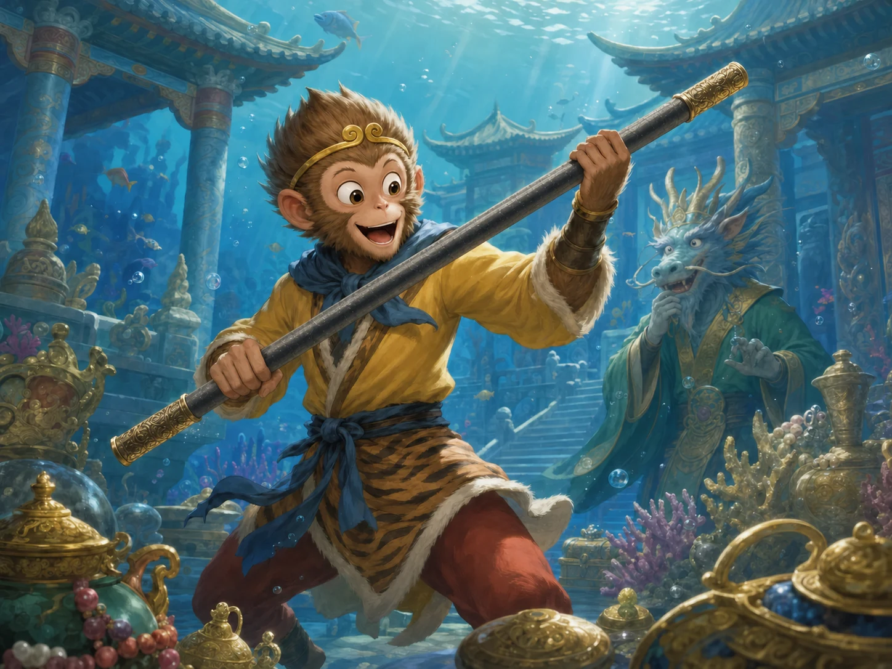
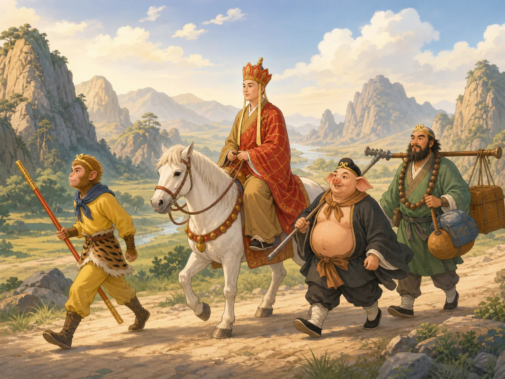
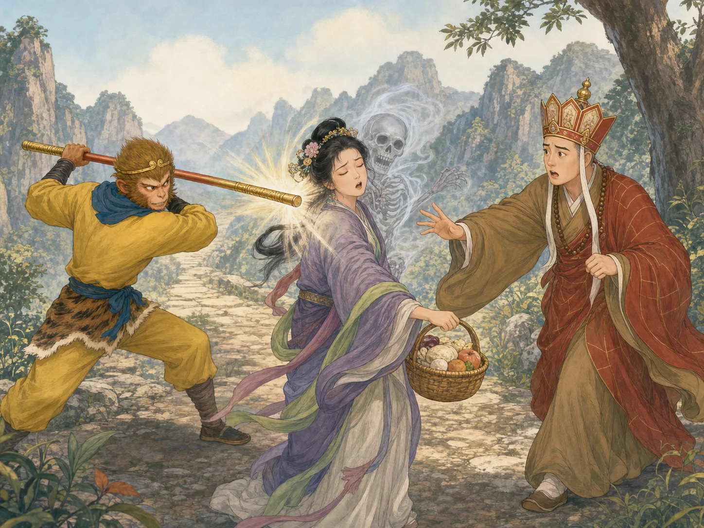

《西游记》：美猴王的冒险
Journey to the West: The Adventures of the Monkey King
Page 1
从石头里蹦出来的猴子
The Monkey Who Jumped Out of a Stone
The waterfall hangs across the cave entrance like a curtain made of water. That is why the cave is called Water Curtain Cave.
Xīyóu Jì · 讲述唐僧师徒西行取经和一路奇遇的古典小说。的故事，从一块石头开始。花果山上有一块神奇的仙石。它晒着太阳，照着月光，又吹了不知道多少年的风雨。有一天，仙石忽然裂开，一只猴子从里面蹦了出来。
石猴和山里的猴子一起摘果子、爬树、玩耍，很快就显出了特别大胆的一面。后来，猴群发现一道巨大的瀑布，大家都想知道瀑布后面有什么。于是它们约好：谁敢跳进去看看，还能平安回来，大家就认他做大王。
石猴真的跳了进去。瀑布后面竟然有一座石桥和一个宽敞的山洞，足够大家一起住。石猴又从瀑布里跳出来，提醒大家别忘了刚才的约定。从此，他就成了“美猴王”。
Xīyóu Jì · 《西游记》 · The classic novel about a scripture journey west with the Monkey King and his companions. begins with a stone. On Flower-Fruit Mountain stood a great magic stone. It had been warmed by the sun, cooled by moonlight, and washed by wind and rain for longer than anyone could remember. Then one day, the stone cracked open. Out jumped a monkey.
The stone monkey ran through the mountain with the other monkeys, climbing trees and eating fruit. Before long, he proved that he was braver than the rest. When the monkeys found a roaring waterfall, they wondered what lay behind it. They made a promise: whoever could jump through the waterfall, find out what was on the other side, and come back safely would become their king.
The stone monkey jumped. Behind the falling water, he found a stone bridge and a large cave where the whole troop could live. He came back through the waterfall and reminded everyone of their promise. From that day on, he became the Handsome Monkey King.
Page 2
做大王的日子本来快快乐乐，可有一天，美猴王忽然想到一件连大王也管不了的事：如果大家最后都会变老、死去，那自己怎么办？于是，他离开花果山，到很远的地方寻找能够教他长生和法术的老师。
找了很多年以后，他终于拜到一位神秘的师父门下。师父给他起名“Sūn Wùkōng · 《西游记》中会七十二变、保护唐僧西行的美猴王。”，又教会他七十二变和筋斗云。孙悟空学会了变成各种模样，还能一个筋斗翻到很远很远的地方。
等他重新回到花果山时，他已经不只是胆子大的猴王了。他会法术了。接下来，他还需要一件趁手的兵器。
For a while, being king was wonderful. Then one day he began to worry about something that even a king could not order away: growing old and dying. So the Monkey King left his mountain to search for a teacher who could show him the secrets of a longer life.
After years of traveling, he finally found one. The teacher gave him the name Sūn Wùkōng · 孙悟空 · The Monkey King of Journey to the West, famous for magic transformations and his staff. and taught him powerful magic. Wukong learned seventy-two transformations, which let him change his shape, and the Somersault Cloud, which could carry him an enormous distance in a single leap.
By the time he returned to Flower-Fruit Mountain, Wukong could turn into animals, fly through the sky, and perform tricks that no ordinary monkey could dream of. Now he needed a weapon.
Page 3
海底找到的金箍棒
A Staff from the Bottom of the Sea

In the underwater Dragon Palace, Wukong lifts the gold-banded iron staff. The Dragon King is amazed that he can move such a heavy weapon.
孙悟空来到海底龙宫，向龙王讨一件够重、够结实的兵器。龙王拿出一件又一件，孙悟空试来试去，总觉得不够顺手。
后来，他看见一根巨大的铁柱。这就是Rúyì Jīngū Bàng · 《西游记》中孙悟空能够随意变大变小的兵器。。它重得吓人，孙悟空却轻轻松松就举了起来。更妙的是，金箍棒还能变大变小。打架的时候，它可以变得又粗又长；不用的时候，孙悟空念个口诀，就能把它缩成绣花针那么小，藏进耳朵里。
孙悟空高高兴兴地带走了金箍棒。龙王可一点也高兴不起来。
Wukong went beneath the sea to the palace of the Dragon King and asked for something heavy enough for him to use. The Dragon King brought out weapon after weapon. Wukong tried them, but nothing felt right.
Then he noticed a huge iron pillar that seemed to shine when he came near it. This was Rúyì Jīngū Bàng · 如意金箍棒 · Sun Wukong's magic staff, which can grow, shrink, and change weight., the magic gold-banded staff. It was so heavy that almost no one could move it, but Wukong lifted it with ease. Even better, the staff could change size. When he wanted to fight, it could become thick and long. When he was finished, he could shrink it until it was as small as an embroidery needle and tuck it safely inside his ear.
Wukong was delighted. The Dragon King was less delighted to see his treasure leave.
Page 4
没多久，孙悟空又闯了另一件祸。有一天晚上，地府的差役来抓他，因为生死簿上写着，他的寿命已经到了。孙悟空当然不肯。
他一路闯进地府，找到记录大家寿命的生死簿，把自己的名字划掉了。想了想，他又把很多猴子的名字也一起划掉。这下，龙王在告他的状，地府也在告他的状。天庭终于决定：得管管这只猴子了。
Yùhuáng Dàdì · 中国民间信仰和道教故事中统领天庭的神。想，与其和他打，不如先把他请到天上，给他一个官做。孙悟空到了天庭，被封了一个官，名字叫“Bìmǎwēn · 《西游记》中天庭给孙悟空安排的养马官职。”。听起来挺威风，其实就是管天马的小官。
不过，孙悟空刚开始并不知道这一点。他上任以后，还真干得挺认真。
Soon Wukong caused trouble somewhere else. One night, messengers from the Underworld came for him because the Book of Life and Death said his time was up. Wukong refused to accept that.
He stormed into the Underworld, found the book that recorded lifetimes, and crossed out his own name. Then he crossed out the names of many other monkeys too. Now both the Dragon King and the rulers of the Underworld had complaints about him. Heaven decided it was time to do something.
The Yùhuáng Dàdì · 玉皇大帝 · The ruler of Heaven in many Chinese folk and Daoist stories., ruler of Heaven, thought perhaps the easiest way to keep this powerful monkey out of trouble was to give him a job. Wukong was invited to Heaven and given the title Bìmǎwēn · 弼马温 · The low-ranking heavenly stable post given to Sun Wukong in Journey to the West.. It sounded important. His job was to help manage the heavenly horses.
And, surprisingly, he took the job seriously.
Page 5
他先查文书、点马匹。御马监里有人准备草料，有人给马刷洗、喂水、煮饲料，还有人负责帮忙管理。孙悟空自己白天晚上都盯着马。马睡了，他把它赶起来吃草；马跑远了，他又把它抓回槽边。半个多月以后，天马被他养得又肥又壮。大家很高兴，还摆酒给他庆祝。
喝着喝着，孙悟空忽然想起一个问题：“对了，我这个弼马温，到底是几品官？”别人告诉他：“没有品级。”孙悟空一听，先高兴了：“没有品级？是不是大得已经没法分品级了？”
大家赶紧解释：“不是。是太小了，小到根本排不上品级。”孙悟空的脸一下子变了。自己在花果山好歹是个猴王，天庭居然骗他上来养马？他一把推翻桌子，从耳朵里取出金箍棒，直接冲出天门，回花果山去了。
猴子们一见他就欢呼：“大王！你走了十几年，总算回来了！”孙悟空愣住了：“十几年？我明明只在天上待了半个多月！”猴子们告诉他：“天上一天，地上一年呀。”
孙悟空更不想回去做弼马温了。这一次，他自己给自己起了一个官名：“Qítiān Dàshèng · 孙悟空不满天庭官职后给自己取的称号。”。意思就是——我和天一样厉害。这才像话嘛。
Wukong checked the records and counted the horses. Other workers prepared grass, brought water, cooked feed, and brushed the horses. Wukong watched over everything day and night. If a horse was sleeping instead of eating, he woke it up. If one wandered away from the feeding trough, he brought it back. After a little more than two weeks, the horses were fat and healthy. The other officials were so pleased that they prepared a feast for him.
During the meal, Wukong suddenly asked, “By the way, what rank is a Bimawen?” The others told him it had no official rank. Wukong misunderstood. “No rank? Then it must be so important that it is above all the ranks!”
Not exactly. They explained that the job was so low that it did not even count as a proper rank. Wukong exploded. He had been king of Flower-Fruit Mountain, and Heaven had brought him up here to be a stable keeper? He pushed over the table, pulled the staff from his ear, and stormed out of Heaven.
When he reached Flower-Fruit Mountain, the monkeys rushed to welcome him home. “You’ve been gone more than ten years!” they said. Wukong stared at them. “Ten years? I was only in Heaven for a little more than two weeks!” That was when he learned another strange rule of the story: one day in Heaven could equal a year below.
Wukong had had enough of heavenly job titles. He gave himself a title instead. Qítiān Dàshèng · 齐天大圣 · The grand title Sun Wukong gives himself after rejecting Heaven's low-ranking job.—Great Sage Equal to Heaven. This one sounded much better.
Page 6
一个蟠桃园，怎么变成了大闹天宫
How a Peach Garden Turned into Havoc in Heaven
天庭先派兵来抓孙悟空，可一时拿他没办法。后来，玉皇大帝干脆又把他请回天上，还真的承认了“齐天大圣”这个称号。大家都希望，这回孙悟空总该满意了。一开始还真没出什么事。
后来，天庭又给他安排了一件差事：看守蟠桃园。园里的桃子可不是普通桃子。有些要几千年才成熟，据说吃了能让神仙更加长寿。让孙悟空看桃园，现在想想，实在有点冒险。
他先把园子里的桃树看了个遍，慢慢知道哪几棵树的桃子最好。等那些又大又熟的桃子长出来，他就偷偷摘几个吃。过些日子，再吃几个。这件事持续了一阵子。
终于有一天，Xīwángmǔ · 中国神话中的重要女神，在牛郎织女故事中把两人隔在天河两边。要举行盛大的蟠桃会，派七位仙女来园里摘桃。前面的树还能摘到桃子，中间的树也还有。可到了结最好大桃的那些树下，仙女们发现，成熟的桃子几乎都没了，只剩下一些青桃。熟桃都去哪儿了？当然进了孙悟空的肚子。
仙女们后来找到了正在树上睡觉的孙悟空。孙悟空醒来以后，听说她们是来给蟠桃会摘桃的，马上问：“蟠桃会都请谁？”仙女们说了一大串神仙的名字。孙悟空等了半天，终于忍不住问：“请我了吗？”仙女们说：“没有听说。”
这下孙悟空真的生气了。我明明是“齐天大圣”，这么大的宴会居然不请我？
Heaven first sent soldiers to deal with Wukong, but he fought them off. Finally, the Jade Emperor decided to invite him back and let him keep his grand new title. Perhaps, everyone hoped, Wukong would be happy if he felt important. For a while, he was.
Then Heaven gave him another job: watching over the Peach Garden. These were no ordinary peaches. Some took thousands of years to ripen, and the ripest ones were said to give extraordinary long life. Putting Sun Wukong in charge of them was a risky choice.
At first, he walked around the garden and learned which trees had the best fruit. Then, whenever the biggest peaches ripened, he began quietly eating them himself. He did this more than once.
One day, seven fairy attendants arrived with baskets. The Xīwángmǔ · 王母娘娘 · A powerful goddess who separates the Cowherd and Weaver Girl in the legend. of Heaven was preparing a great Peach Banquet and had sent them to gather fruit. They filled baskets from the first trees and the middle trees. But when they reached the trees with the finest peaches, they found almost nothing ready to pick. Most of the ripe ones were gone. Wukong had eaten them.
The fairies finally found him sleeping high in a peach tree. When he woke, he asked why they had come. “The Peach Banquet,” they explained. Wukong immediately became interested. “Who has been invited?” The fairies began listing important gods and immortals. Wukong waited. Then he asked the question he really cared about. “Am I invited?” The fairies had not heard his name on the list.
Wukong was furious.
Page 7
他先用法术把七位仙女定在原地，然后自己往蟠桃会跑。路上碰见一位正准备赴宴的神仙，他还把人家骗到别处去了。等孙悟空到了宴会的地方，宴会还没正式开始。
桌上已经摆好了吃的。还有仙酒。孙悟空当然没有客气。他吃了一些，又喝了不少。喝着喝着，人也有点晕乎乎的，竟然走到了Tàishàng Lǎojūn · 道教尊神，《西游记》中掌管炼丹炉和仙丹。住的地方。
太上老君是一位很会炼仙丹的道家神仙。当时人不在。仙丹却都在。孙悟空一看见那些仙丹，又忍不住了，抓起来就吃。
吃完以后，他终于清醒了一点。蟠桃吃了，蟠桃会闯了，仙酒喝了，现在连太上老君的仙丹也吃了。这个祸，好像真的有点大。孙悟空赶紧逃回花果山。
He used magic to freeze the fairies in place and hurried toward the banquet. Along the way, he tricked one invited guest into going somewhere else. Then he slipped into the banquet area before the celebration had properly begun.
There was food. There was heavenly wine. Wukong helped himself to both. Before long, he had drunk far too much and wandered away from the banquet. Somehow he ended up at the home of Tàishàng Lǎojūn · 太上老君 · A high Daoist deity who keeps the alchemy furnace and magical pills in Journey to the West., a powerful Daoist immortal famous for making magical pills.
No one was there. But the pills were. Wukong found containers filled with precious pills of immortality and began eating them like snacks.
Eventually even Wukong realized this was becoming a very large problem. He had eaten the peaches, crashed the banquet, drunk the wine, and eaten the magical pills. It seemed like a good time to leave. He fled back to Flower-Fruit Mountain.
Page 8

Wukong fights his way out of Heaven's gate and calls himself the Great Sage Equal to Heaven. From the underwater Dragon Palace to the halls of Heaven, nowhere seems beyond his reach.
天庭这一次可真的派了大军来抓他。孙悟空拿着金箍棒，又打又变，一时没人能抓住他。后来，Èrláng Shén · 中国神话中的神将，《西游记》中曾与孙悟空交战。来了。二郎神是天庭一位本领很强的神将，也会变化。
孙悟空变，二郎神也跟着变。两个人追来追去，打得难分难解。就在这时候，太上老君从天上扔下一只神奇的金刚琢，一下打中了孙悟空。孙悟空这才被抓住。
可是，抓住他以后，天庭又遇到一个麻烦：拿他怎么办？刀砍不坏，火也烧不坏，连雷都奈何不了他。孙悟空学过长生的法术，又吃了蟠桃、仙酒和仙丹，身体已经硬得不得了。
最后，太上老君说：“把他交给我。”他把孙悟空推进八卦炉里，让炉火一直烧。七天过去了。又七天。一直烧到七七四十九天。
孙悟空在炉里找到一个火比较弱的地方，躲过了最厉害的火，可炉里的烟一直往他眼睛里钻。四十九天以后，炉门终于打开。孙悟空没被烧掉。他反而从炉子里跳了出来。
烟火把他的眼睛熏得又红又亮，后来这双眼睛就成了著名的“火眼金睛”。许多妖怪再怎么变化，也很难骗过他。孙悟空踢翻八卦炉，拿出金箍棒，又一次大闹天宫。
Heaven sent an army. Wukong fought back with his staff and his seventy-two transformations. At last, Èrláng Shén · 二郎神 · A warrior deity who battles Sun Wukong in Journey to the West., one of Heaven’s strongest warriors, came to fight him. Wukong changed shape; Erlang changed shape too. They chased each other through one transformation after another.
While they were fighting, Taishang Laojun threw down a magical metal ring. It struck Wukong and knocked him off balance. This time, Heaven finally captured him.
But capturing Wukong and punishing Wukong turned out to be two different things. Blades could not cut him. Fire could not burn him. Thunder did not finish the job either. Wukong had learned too much magic and eaten too many magical peaches and pills.
So Taishang Laojun tried something else. He put Wukong inside the Eight Trigrams Furnace and ordered the fire to burn for forty-nine days.
Wukong found a place inside where the flames were weaker, but smoke kept blowing into his eyes. When the furnace was finally opened, he was still alive. His eyes had been changed by the smoke and heat. They became the famous “fiery golden eyes,” which later helped him see through many magical disguises.
Wukong jumped out of the furnace, kicked it over, pulled out his staff, and began making trouble in Heaven all over again.
Page 9
这一次，如来佛祖来了。孙悟空觉得，既然天兵天将都拦不住自己，自己也许连玉皇大帝的位置都能坐。如来伸出一只手，说：“如果你能跳出我的手掌，就算你有本事。”
孙悟空差点笑出来。这么小一只手掌，怎么可能困得住自己的筋斗云？他纵身一跳，一直飞，一直飞，最后看到远处竖着五根巨大的柱子。“到了！”孙悟空想，“这一定就是天边。”
为了证明自己真的来过，他还在一根柱子上写下：“齐天大圣，到此一游。”然后，他又一个筋斗翻了回去。“我跳出去了！”
如来让他再仔细看看。孙悟空低头一看。刚才写的字，居然就在如来的一根手指上。原来，那五根“天边的柱子”，就是如来的五根手指。孙悟空从头到尾，都没有跳出那只手掌。
他还想跑。如来把手掌一翻，五根手指变成五座连在一起的大山，叫作五行山，一下把孙悟空压在下面。山上又贴了一道封条。
这一次，孙悟空不能靠金箍棒，也不能靠筋斗云，更不能靠七十二变逃走了。
This time, the Buddha came to stop him. Wukong boasted that he was so powerful he could rule Heaven himself. The Buddha held out one hand. “If you can jump out of my palm,” he said, “then you can prove how great you are.”
Wukong almost laughed. One somersault could carry him farther than most people could imagine. He leaped into the air and flew until he saw five enormous pillars far in the distance. Surely, he thought, this must be the end of the world.
To prove he had been there, he wrote, “Great Sage Equal to Heaven was here,” on one of the pillars. Then he flew back. “I made it out of your hand!” he announced.
The Buddha told him to look more carefully. Wukong looked. The words he had written were right there on one of the Buddha’s fingers. The five enormous pillars had been five fingers. Wukong had never left the Buddha’s palm.
He tried to escape again, but the Buddha turned his hand over. His five fingers became five connected mountains. Wukong was trapped beneath Five Elements Mountain. A magical seal was placed on top.
For the first time, Sun Wukong could not simply fight, fly, or transform his way out of trouble.
Page 10
五百年以后，唐僧来了
Five Hundred Years Under a Mountain
孙悟空在五行山下整整待了五百年。后来，Guānyīn · 中国佛教中以慈悲、救助众生闻名的菩萨。菩萨从这里经过。观音正在帮助安排一场去西天取经的旅程。孙悟空答应，如果有人能救他出去，他愿意保护取经人，一路向西。于是，他继续等。
终于有一天，一位和尚走到了五行山。他就是Táng Sēng · 《西游记》中带领徒弟西行取经的僧人。。小说里的唐僧，受到了历史上一位真实和尚Xuánzàng · 唐代前往印度求取佛经的僧人。的启发。真正的玄奘在一千三百多年前从中国出发，经过漫长旅行来到印度学习佛教，又带着许多佛教经典回到中国。不过，《西游记》里的这趟旅行，可比真实历史热闹多了。
孙悟空在山下大叫：“师父！师父！救我出来！”唐僧爬到山顶，找到了压在山上的封条，把它揭了下来。孙悟空马上喊：“师父，走远些！”大家赶紧退开。
忽然，只听一声巨响。山石震动，石头裂开滚落，整座山像都晃了起来。等唐僧回过神来，孙悟空已经站到了他的面前。压了五百年的猴王，终于自由了。
Wukong remained under the mountain for five hundred years. Later, Guānyīn · 观音 · A compassionate bodhisattva who hears and helps beings in distress., a bodhisattva helping to arrange a great journey to collect Buddhist scriptures, came past the mountain. Wukong promised that if someone freed him, he would protect the scripture seeker on the dangerous road west. So he waited.
At last, a monk named Táng Sēng · 唐僧 · The scripture-seeking monk protected by Sun Wukong and the other pilgrims in Journey to the West. came down the road. The monk in the novel was inspired by a real Chinese Buddhist monk named Xuánzàng · 玄奘 · The Tang monk who traveled to India to study Buddhism and bring back scriptures., who traveled from China to India more than thirteen hundred years ago to study Buddhism and bring important texts home. Journey to the West takes that real journey and fills it with magic, monsters, talking animals, and one very troublesome monkey.
Wukong called out to Tang Monk from beneath the mountain and begged to be freed. Tang Monk climbed to the top, found the magical seal, and removed it. “Move away!” Wukong called. Tang Monk and the others hurried back.
Then came a tremendous crash. Rocks shook and split as Wukong forced his way out from under the mountain. A moment later, the Monkey King was standing in front of Tang Monk. After five hundred years, he was free.
Page 11

Tang Monk, Sun Wukong, Zhu Bajie, Sha Wujing, and the White Dragon Horse travel west together. The road is rarely quiet.
孙悟空拜唐僧为师，答应保护他一路取经。可是，两个人马上发现，他们实在不太像。唐僧性子温和，不愿随便伤害别人。孙悟空遇到危险时，第一个想到的通常是金箍棒。
没走多久，他们就因为路上的强盗吵了起来。孙悟空出手太重，唐僧很生气，一直责备他。孙悟空也火了，一赌气，翻个筋斗就走了。
孙悟空离开以后，观音菩萨变成一位老婆婆，送给唐僧一顶特别的帽子，还教给他一个秘密的紧箍咒。后来，孙悟空又回来了。他一眼看中了那顶帽子。唐僧说，这是一顶很好的帽子。孙悟空高高兴兴戴到头上。唐僧开始念咒。
突然，帽子里面藏着的金箍一下勒紧了孙悟空的头。“头痛！头痛！”孙悟空疼得直打滚。唐僧一停，头就不痛了。孙悟空伸手去摘，摘不下来。他把金箍棒缩成小针，从耳朵里拿出来，想伸进金箍下面把它撬开。还是不行。
从此以后，孙悟空要是真的闹得太过头，唐僧总算有了一个能让他停下来的办法。孙悟空当然非常不喜欢这个办法。可是，他还是留在了取经路上。
没多久，队伍又多了一匹特别的马。一条龙吃掉了唐僧原来的白马。后来观音来了，原来这条龙本来就是被安排来帮助取经的龙王子。观音把他变成了白龙马，从此驮着唐僧一路向西。
接下来加入的是Zhū Bājiè · 《西游记》中使用九齿钉耙的取经人之一。。猪八戒力气很大，长着一张猪脸。他喜欢吃东西，不太喜欢辛苦赶路，每次事情变得特别麻烦时，他常常第一个想：“要不我们散伙回家吧？”嘴上说归说，真遇到事情，他还是会留下帮忙。
最后加入的是Shā Wùjìng · 《西游记》中保护唐僧西行的徒弟之一，也常被叫作沙僧。。他话比较少，也比孙悟空和猪八戒安静得多，常常帮忙挑着行李，一路跟着大家走。
这样，大家熟悉的取经队伍终于到齐了：唐僧骑白龙马，孙悟空拿着金箍棒，猪八戒扛着钉耙，沙悟净挑着行李。他们一路向西。真正的麻烦，也才刚刚开始。
Wukong became Tang Monk’s first disciple and promised to protect him. But it did not take long for a new problem to appear. Wukong was powerful, quick-tempered, and used to doing exactly what he wanted. Tang Monk was gentle and believed that even dangerous situations should be handled with care.
When robbers blocked the road, Wukong fought them much more fiercely than Tang Monk thought was right. Tang Monk scolded him. Wukong became angry and flew away.
While Wukong was gone, Guanyin, disguised as an old woman, gave Tang Monk a special cap and taught him a secret spell. Wukong eventually came back. He saw the cap and liked it. Tang Monk told him that it was a wonderful cap. Wukong put it on. Then Tang Monk began reciting the spell.
Suddenly, a golden band hidden inside the cap tightened around Wukong’s head. “My head! My head!” Wukong cried. When Tang Monk stopped reciting, the pain stopped. Wukong tried to pull the band off. It would not move. He even took the tiny needle-sized staff from his ear and tried to pry underneath it. Still no luck.
From then on, if Wukong became completely impossible to control, Tang Monk had one way to stop him. Wukong was not pleased. But he stayed.
Soon the traveling group grew. A dragon prince who had swallowed Tang Monk’s original horse was turned into the White Dragon Horse and became his new mount.
Then came Zhū Bājiè · 猪八戒 · One of the Journey to the West pilgrims, recognized by his pig face and rake., a strong, pig-faced traveler who loved food, disliked hard work, and complained whenever the road became especially miserable. Last came Shā Wùjìng · 沙悟净 · One of the Journey to the West pilgrims, also commonly called Sandy or Monk Sha., a quieter and steadier companion who joined them at a dangerous river.
Now the famous group was complete: Tang Monk on the White Dragon Horse, Sun Wukong with his gold-banded staff, Zhu Bajie with his rake, and Sha Wujing helping carry the luggage. They headed west. It would be a very long trip.
Page 12
唐僧看见的是人，孙悟空看见的是妖怪
Three People—or One Demon?

The White Bone Demon becomes a girl carrying food. Tang Monk sees an ordinary person, but Wukong sees a demon who wants to eat his teacher.
有一天，师徒来到一座荒山。Báigǔ Jīng · 《西游记》中多次变成人形欺骗唐僧的妖怪。发现了唐僧。她听说吃了唐僧的肉可以长生不老，于是想把他抓走。可孙悟空就在旁边。直接冲过去当然不行。于是，白骨精决定变一个样子。
第一次，她变成一位年轻女子，手里提着食物，朝师徒几人走过来。唐僧看到的是一个独自在山里行走的姑娘。猪八戒先注意到了她手里的吃的。孙悟空看到的却是妖怪。
他的火眼金睛没有被骗。孙悟空举起金箍棒就打。白骨精赶紧让真身逃走，只留下一个假身体倒在地上。唐僧没有看见妖怪逃走。他只看见一个姑娘倒在地上。他吓坏了，也气坏了。
白骨精发现这个办法有用，马上又来第二次。这回，她变成一个老婆婆，说自己正在找女儿。孙悟空一看，又是她。他再次出手。白骨精又逃走了。可唐僧看到的，却是孙悟空又打了一个无辜的老人。
第三次，白骨精变成一个老公公，说自己正在寻找妻子和女儿。孙悟空一看就明白了：还来？这一次，他没有让白骨精再逃掉。
One day the travelers entered a lonely mountain. A demon called Báigǔ Jīng · 白骨精 · A demon who repeatedly disguises herself as a human to deceive the Tang Monk., the White Bone Demon, saw Tang Monk and wanted to capture him. She had heard that eating the monk’s flesh could bring immortality. But there was a problem. Sun Wukong was nearby. So the demon decided not to attack as herself.
She changed into a young woman carrying food and walked toward the travelers. Tang Monk saw a young woman alone in the mountains. Zhu Bajie noticed the food. Wukong saw a demon.
His fiery golden eyes were not fooled. He raised his staff and struck. But the demon escaped from the false body she had created. Tang Monk did not see the escape. He only saw a young woman lying on the ground. He was horrified.
The demon tried again. This time she changed into an old woman who seemed to be looking for her missing daughter. Again, Wukong saw through the disguise. Again, the demon escaped. And again, Tang Monk thought Wukong had attacked an innocent person.
The third time, the demon returned as an old man searching for both his wife and daughter. Wukong knew exactly what was happening. This time he finally defeated the demon for good.
Page 13
可是唐僧看到的，却完全是另一回事。在他眼里，孙悟空接连伤害了三个人。唐僧已经提醒过他很多次，这一次，他再也不肯相信孙悟空的解释了。唐僧把孙悟空赶走。
孙悟空回到花果山，又生气，又委屈。自己明明是在救师父，为什么师父就是不相信自己？可是唐僧也有自己的难处。孙悟空有火眼金睛。唐僧没有。他们站在同一座山里，看着同一个“人”，却看见了完全不同的东西。
孙悟空离开以后，取经队伍很快又遇到了更大的麻烦。最后，猪八戒只好跑回花果山，请孙悟空回来救师父。孙悟空当然还在生气。可是，他还是回来了。
But by then Tang Monk had seen what appeared to be three ordinary people attacked by his disciple. He had warned Wukong again and again, and now he could no longer believe him. He sent Wukong away.
Wukong returned to Flower-Fruit Mountain, angry and deeply hurt. He had been protecting his master, yet his master thought he was the danger. But Tang Monk had a problem too. Wukong had fiery golden eyes. Tang Monk did not. They had looked at the same three figures and seen completely different things.
Without Wukong, however, the travelers soon ran into even greater danger. Eventually Zhu Bajie had to go all the way back to Flower-Fruit Mountain and ask him to help. Wukong was still angry. He came back anyway.
Page 14
最后，金箍不见了
The Monkey Who No Longer Needed the Golden Band
白骨精只是《西游记》里很多冒险中的一个。书里说，师徒一路经历了九九八十一难。路上有妖怪，有大河，有高山，有陷阱，有法术，也有师徒几个人一次又一次的争吵。
孙悟空一次又一次用自己的本事救大家。唐僧也一次又一次提醒他：有本事，并不等于想做什么就做什么。猪八戒一路抱怨，沙悟净一路跟着，白龙马一直驮着唐僧。他们没有停下来。
最后，师徒终于到达目的地，取到了经书，完成了这场漫长的旅行。故事快结束时，孙悟空忽然想起了自己头上的金箍。现在，他已经完成取经，也得到了最后的奖励。他对唐僧说：“师父，现在总可以把这个金箍拿掉了吧？”
唐僧却告诉他：“已经没有了。你自己摸摸看。”孙悟空伸手一摸。真的没有了。
那个曾经闯地府、划掉生死簿、嫌弼马温官太小、偷吃蟠桃、偷喝仙酒、偷吃仙丹，还大喊自己“齐天大圣”的猴王，终于不再需要一个金箍逼着他留在路上。
他还是那个孙悟空。还是聪明，还是急脾气，还是喜欢赢，还是很会挥金箍棒。可是，他已经学会了一件七十二变也教不了他的事：
本事很大，是一回事。
知道该拿这些本事做什么，是另一回事。
The White Bone Demon was only one adventure in a very long journey. The novel says the travelers faced eighty-one trials. There were demons, rivers, mountains, traps, magic, hunger, arguments, and plenty of moments when Zhu Bajie thought going home sounded like an excellent idea.
But they kept moving west. Again and again, Wukong used his strength and cleverness to save the group. Again and again, Tang Monk reminded him that having great power did not mean he could always do whatever he wanted.
At last, after years of traveling, the group reached its destination and received the Buddhist scriptures. Their journey was finally complete. At the very end of the story, Wukong remembered the golden band around his head. Now that the journey was finished and he had earned his reward, he asked Tang Monk to remove it.
Tang Monk told him something surprising. “You don’t need it anymore. Touch your head.” Wukong reached up. The band was gone.
The monkey who had once crossed his own name out of the Book of Life and Death, fought Heaven, eaten the peaches, stolen the pills, and declared himself equal to Heaven no longer needed a magical band to make him stay on the road.
He was still Sun Wukong. He was still clever, proud, impatient, and very good with a staff. But he had learned something that none of his seventy-two transformations could teach him.
Having great power is one thing.
Learning what to do with it is another.